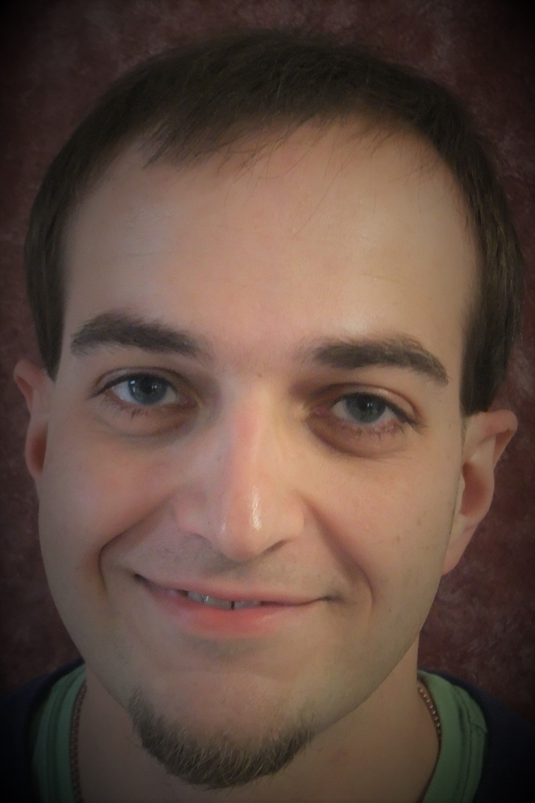
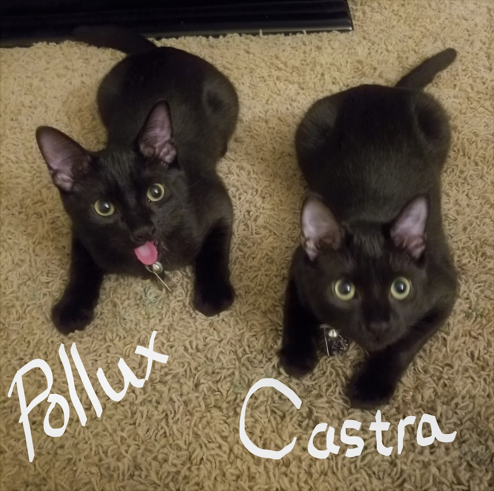

ABOUT

Hello, thank you for coming to visit my page, hope you enjoy what I have done with the
place!
My name is Borjan, pronounced Bor-yēn. I was born in Yugoslavia, the summer
of 1987. Always aspire to gain as much
knowledge as possible. Driven, passionate, resourceful, witty, strategic, honest; just some of the words
that describe me. Mainly, kind and helpful. I have always enjoyed working with computers, whether it was
playing games, writing, reading, learning, teaching, manipulating, researching, I have always enjoyed the
concept of a world connected. Wanting to be a bigger part of that world, I have started taking steps to
achieve my newest goal: Coder/Programmer/Developer!
My
plan to achieve
this starts with the Coding
Bootcamp at University of North Carolina at
Chapel
Hill.
At this current point in life I have achieved:
- Living in 3 Countries
- Crossed an Ocean
- Fluent in 3, Understand 5 languages
- Bachelor's Degree in General Business Administration
- Learning is always an uphill battle, but it is just as rewarding.
- Figured out that having many hobbies is not a bad thing.
- Having Cats is the coolest thing in the world!!!!
